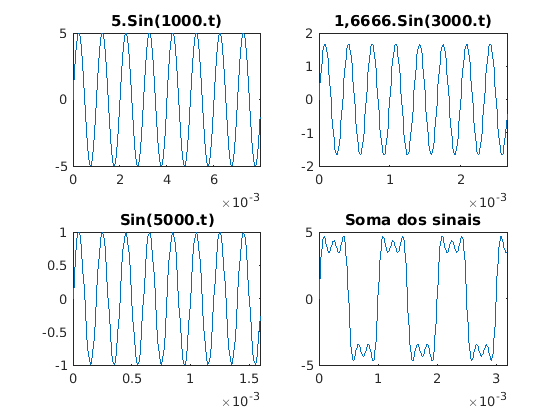
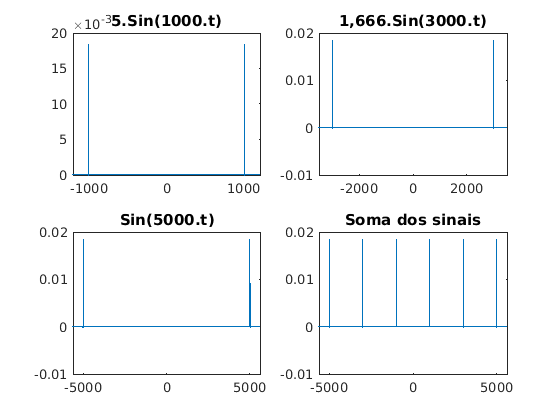
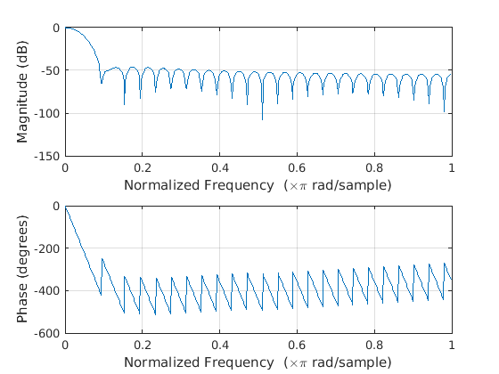
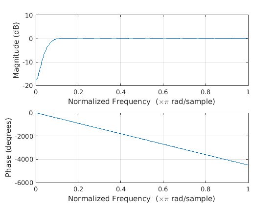
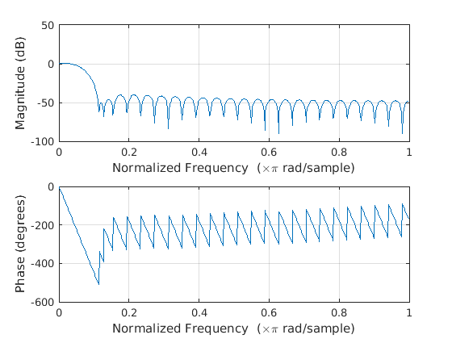
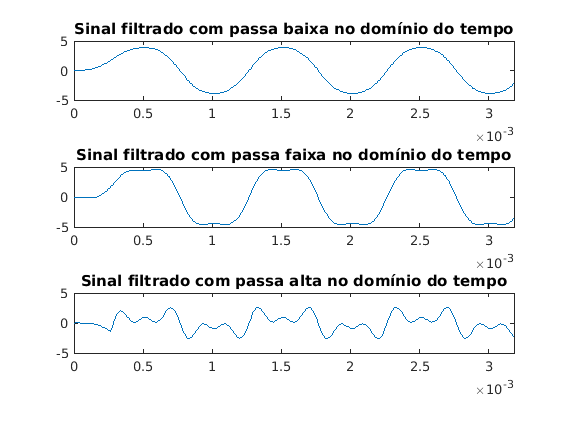
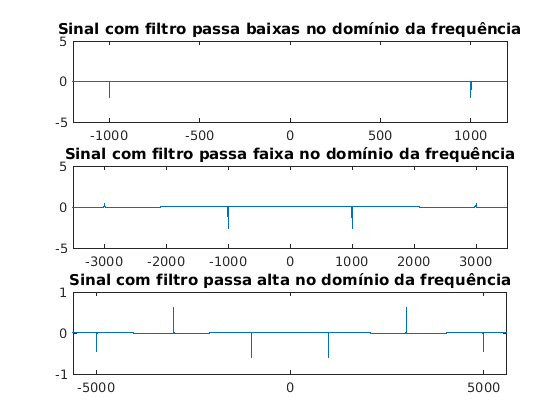

Contents
clc;
clear all;
close all;
Criando os dados
f1 = 2*pi*1000;
f2 = 2*pi*3000;
f3 = 2*pi*5000;
fs = 2*pi*15000;
t = 0:1/fs:1;
Criando os sinais e plotando:
x1t = 5*sin(f1*t);
x2t = (5/3)*sin(f2*t);
x3t = sin(f3*t);
st = x1t + x2t + x3t;
figure(1);
subplot(2,2,1);
plot(t, x1t);
title('5.Sin(1000.t)');
xlim([0 50/f1]);
subplot(2,2,2);
plot(t,x2t);
title('1,6666.Sin(3000.t)');
xlim([0 50/f2]);
subplot(2,2,3);
plot(t,x3t);
title('Sin(5000.t)');
xlim([0 50/f3]);
subplot(2,2,4);
plot(t,st);
title('Soma dos sinais');
xlim([0 100/f3]);

Gerando os sinais na frequência e plotando:
f = -fs/2:fs/2;
X1wz = fft(x1t);
X1w = fftshift(X1wz)/length(X1wz);
figure(2);
subplot(2,2,1);
plot(f, X1w);
title('5.Sin(1000.t)');
xlim([-1200 1200]);
X2wz = fft(x2t);
X2w = fftshift(X2wz)/length(X2wz);
subplot(2,2,2);
plot(f, X2w);
title('1,666.Sin(3000.t)');
xlim([-3500 3500]);
X3wz = fft(x3t);
X3w = fftshift(X3wz)/length(X3wz);
subplot(2,2,3);
plot(f,X3w);
title('Sin(5000.t)');
xlim([-5600 5600]);
Swz = fft(st);
Sw = fftshift(Swz)/length(Swz);
subplot(2,2,4);
plot(f, Sw);
title('Soma dos sinais');
xlim([-5600 5600]);
Warning: Imaginary parts of complex X and/or Y arguments ignored
Warning: Imaginary parts of complex X and/or Y arguments ignored
Warning: Imaginary parts of complex X and/or Y arguments ignored
Warning: Imaginary parts of complex X and/or Y arguments ignored

Gerando os filtros:
figure(3);
lowfil = fir1(50, (2000)/fs);
freqz(lowfil);
figure(4);
highfil = fir1(50, 4000/fs, 'high');
freqz(highfil);
figure(5);
middlefil = fir1(50, [2000 4000]/fs);
freqz(middlefil);
  
Passando o sinal pelos filtros e plotando:
figure(6);
subplot(3,1,1);
slowfil = filter(lowfil, 1, st);
plot(t, slowfil);
xlim([0 100/f3]);
title('Sinal filtrado com passa baixa no domínio do tempo');
smiddlefil = filter(middlefil, 1, st);
subplot(3,1,2);
plot(t,smiddlefil);
xlim([0 100/f3]);
title('Sinal filtrado com passa faixa no domínio do tempo');
shighfil = filter(highfil,1,st);
subplot(3,1,3);
plot(t,shighfil);
xlim([0 100/f3]);
title('Sinal filtrado com passa alta no domínio do tempo');

Gerando e plotando os sinais filtrados no domínio da frequência:
figure(7);
Slowfilz = fft(slowfil);
Slowfilw = fftshift(Slowfilz)/length(Slowfilz);
subplot(3,1,1);
plot(f, Slowfilw);
title('Sinal com filtro passa baixas no domínio da frequência');
xlim([-1200 1200])
Smiddlefilz = fft(smiddlefil);
Smiddlefilw = fftshift(Smiddlefilz)/length(Smiddlefilz);
subplot(3,1,2);
plot(f, Smiddlefilw);
title('Sinal com filtro passa faixa no domínio da frequência');
xlim([-3500 3500]);
Shighfilz = fft(shighfil);
Shighfilw = fftshift(Shighfilz)/length(Shighfilz);
subplot(3,1,3);
plot(f,Shighfilw);
title('Sinal com filtro passa alta no domínio da frequência');
xlim([-5600 5600]);
Warning: Imaginary parts of complex X and/or Y arguments ignored
Warning: Imaginary parts of complex X and/or Y arguments ignored
Warning: Imaginary parts of complex X and/or Y arguments ignored
